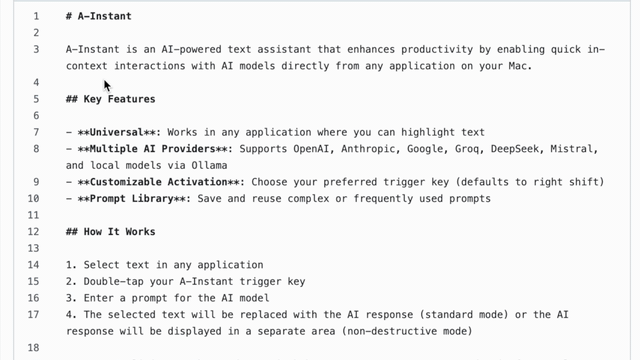

See A-Instant in Action
Standard Mode
In this mode, the selected text is directly replaced by the AI's response. This is useful for quick edits and transformations.
Example prompts:
- "Translate this text into French"
- "Add humor and sarcasm to this comment"
- "Optimize this code for performance"
- "Correct the grammar and improve the flow"

Non-Destructive Mode
In this mode, the AI's response is displayed separately, leaving the original text untouched. This is ideal for summarizing or analyzing text without altering it.
Example prompts:
- "Summarize this article in three sentences"
- "Create a polite response to this email"
- "Explain what this code snippet does"
- "Extract key dates and locations from this text"